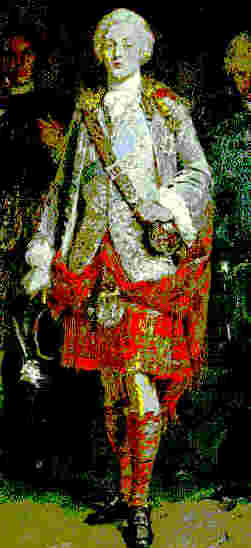
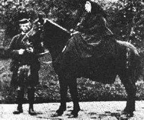

|
Lorsque Jacques II Stuart quitta l'Angleterre en 1688, beaucoup le considéraient comme leur
véritable souverain
. Leurs adversaires, les
'Whigs'
, les appelaient les
'Jacobites'
(Jacobus = Jacques en latin).
Georges, Electeur de Hanovre
devint roi d'Angleterre en 1714 et son fils Georges II lui succéda en 1727.
Ses partisans, les Hanovriens, voyaient dans le fils de Jacques II le
Vieux Prétendant
au trône, et dans son fils, le
Prince Charles Edouard Stuart
, né à Rome le 31 décembre 1720,le 'Jeune Prétendant'.
Malgré les
fréquentes dissensions entre les clans
, c'est en Ecosse qu'eurent lieu les principales tentatives de restauration de
Jacques II
et de ses descendants:
-En juillet 1689, John Graham de Claverhouse, surnommé
"Bonnie Dundee"
, prit la tête du
premier soulèvement
et fut tué à
Killiecrankie
.
-En juillet 1690 des forces jacobites furent défaites en Irlande à la
bataille de la Boyne
et en Ecosse
(bataille de Cromdale)
.
-En février 1692, les McDonalds de
Glencoe
dont le Chef, Alastair, avait combattu aux côtés de Bonnie Dundee tardèrent à faire allégeance au roi Guillaume et furent traitreusement massacrés par leurs antiques ennemis, les Campbells, enrôlés à cette fin par le roi.
-En 1715 John Erskine,
Comte de Mar
, dirigea une nouvelle insurrection des clans des Hautes Terres qui au terme d'un
combat acharné
furent vaincus à
Sherrifmuir
. Le jeune
Comte de Derwentwater
fut la principale victime de la répression qui s'ensuivit.
-En 1719 une tempête dispersa une flotte d'invasion Jacobite partie de Cadix, en Espagne. Deux navires atteignirent l'Ecosse mais la rébellion s'acheva par une
défaite
à Glenshield.
|
Als Jakob II aus dem Stuartschen Geschlecht 1688 England verließ, war er noch von vielen sogenannten
'Jakobiten'
, wie ihre Gegner, die
'Whigs'
, sie nannten, als der
gesetzmäßige König
betrachtet.
Georg, Kurfürst von Hannover
wurde 1714 König von England und nach ihm sein Sohn Georg II im Jahre 1727. Seine Anhänger, die 'Hannoveraner' nannten den Sohn Jakobs II den
'alten Prätendenten'
und dessen Sohn, den in Rom am 31.Dezember 1720 geborenen
Prinzen Karl Eduard
den 'jungen Prätendenten'.
Trotz häufigen
Streiten zwischen den Clans
, war es in Schottland, dass die wichtigsten Versuche unternommen wurden,
Jakob II
und seine Nachfolger wieder auf den Thron einzusetzen:
- Im Juli 1689 leitete John Graham von Claverhouse, auch
"Bonnie Dundee"
genannt, den
ersten Aufruhr
und fiel bei
Killiecrankie
.
- Im Juli 1690 wurden Jakob. Streitkräfte,
an der Boyne
in Irland und in Schottland bei
Cromdale
in die Flucht getrieben.
- Im Februar 1692 versäumte der Clan McDonald von
Glencoe
- dessen Führer, Alastair, mit Bonnie Dundee gekämpft hatte, den ihm gesetzten Termin, dem König Treue zu schwören und wurde in dessen Auftrag von ihren alten Feinden, den Campbells, verräterisch massakriert.
- Im Jahre 1715 übernahm John Erskine,
Graf von Mar
, die Führung eines neuen Aufstands der Hochland-Clans, der nach
erbittertem Kampf
in
Sherrifmuir
niedergeschlagen wurde. Der Graf v.
Derwentwater
fiel der darauf folgenden Repression zum Opfer.
- Im Jahre 1719 wurde eine Jakobitische Flotte, kommend aus Càdiz, Spanien, vom Sturm zerstreut. Zwei Schiffe erreichten Schottland aber der Aufstand endete wiederholt mit einer
Niederlage
bei Glenshield.
|
When James II of the Stuart dynasty left England in 1688 many still regarded him as
their lawful king
and their opponents, the
Whigs
, called them
'Jacobites'
(Jacobus = Latin for 'James').
George, Elector of Hanover
became King of England in 1714 and was succeeded by his son, George II in 1727. His followers, the Hanoverians looked upon the son of James II as
'The Old Pretender'
to the throne and on his son,
Prince Charles Edward Stuart
, born in Rome on 31st December 1720, as 'The Young Pretender'.
In spite of frequent
dissensions between the Clans
, it was in Scotland that the most outstanding attempts to restore
James II
and his descendants were made:
-In July 1689 John Graham of Claverhouse, known as
'Bonnie Dundee'
led the
first uprising
but was killed at
Killiecrankie
.
-In July 1690 Jacobite forces were defeated in Ireland at
the battle of the Boyne
and in Scotland
(battle of Cromdale)
.
-In February 1692 the McDonalds of
Glencoe
whose Chief Alastair had fought with Bonnie Dundee, delayed swearing allegiance to King William and were traitorously slaughtered by their long-time enemies, the Campbells, enlisted by the King to that end.
-In 1715 John Erskine,
Earl of Mar
, led a new uprising of the Highland clans who were defeated after
bitter fighting
at
Sherrifmuir
. The young
Earl of Derwentwater
was one of the many victims of the ensuing repression.
.
-In 1719 a storm dispersed a Jacobite invasion fleet which had sailed from Cadiz, Spain. Two ships reached Scotland but the rising ended in
failure
at Glenshield.
|
|
En 1745 le
Prince Charles
décida de recouvrer le
royaume de son père
et débarqua sur la
côte de l'Ecosse
, berceau de la dynastie des Stuart, le 23 juillet 1745. Il séduisit les chefs de clans des Hautes Terres par le
charme de ses manières
, le port du kilt et ses efforts pour parler le gaélique.
Très vite près de
2000 combattants
des Hautes Terres appartenant surtout aux clans McDonald, Cameron et Stewart of Appin
accoururent
se ranger sous
l'étendard royal
des Stuart. Ils n'avaient pas d'uniforme à proprement parler. La
cocarde blanche
arborée à un
bonnet bleu
devint leur emblème, un jour que le Prince fixa une églantine à son chapeau.
Edimbourg, sauf le château, tomba le 17 septembre et 4 jours plus tard l'armée jacobite mit en déroute celle du général hanovrien,
Sir John Cope
à Prestonpans, près d'Edimbourg.
Le premier novembre l'armée écossaise
entra en Angleterre
et s'avança rapidement de 300 lieues en environ 30 jours de marche, jusqu'à Derby. Londres n'était plus désormais qu'à moins de 120 lieues.
Hors des Highlands, cependant, force fut de reconnaître que le Prince Charles et ses projets de restauration ne rencontraient qu'indifférence auprès des Lowlanders et des Anglais du Nord et que l'afflux de partisans avait tari. Des armées hanovriennes convergeaient, venant du Yorkshire et du Staffordshire. Une autre se préparait à défendre Londres et les Français manquaient au rendez-vous. L'idée des Stewart d'utiliser les succès remportés en Ecosse comme tremplin vers le trône en Angleterre s'avérait un calcul irréaliste.
Aussi le commandement militaire de Charles décida-t-il à l'unanimité de retourner en Ecosse pour y rejoindre à Perth des troupes de renfort. Une grande chance était ainsi gaspillée.
Du 17 janvier au 16 avril 1746, l'armée du Prince fut poursuivie par les Hanovriens sous le commandement du Duc de Cumberland, le fils cadet du roi Georges II, qui furent cependant battus à
Falkirk
, le 17 janvier 1746.
Les 2 armées s'affrontèrent finalement à
Culloden près d'Inverness
où les 5000 hommes épuisés de l'armée du Prince furent défaits par l'armée de Cumberland, forte d'environ 9000 hommes. Près de
1000 Montagnards
périrent sur le champ de bataille. La
brutalité
dont firent ensuite preuve les forces de Hanovre valut à Cumberland le surnom de 'boucher'.
En dépit d'une
chasse à l'homme
des plus acharnées et de la promesse d'une
récompense de 30.000 livres
pour celui qui le livrerait, le Prince Charles parvint à s'échapper presque par miracle et à retourner en France grâce à la bravoure et la loyauté de centaines d'hommes et de femmes des Hautes Terres, parmi lesquels
Flora McDonald
joua un rôle remarquable, en l'aidant à passer de l'Ile de South Uist à l'Ile de Skye. Elle se procura des passeports pour elle-même et pour le Prince, déguisé en femme sous le nom de l'Irlandaise
Betty Burke
. Elle le conduisit sain et sauf jusqu'à
Portree dans l'Ile de Skye
et ne devait plus jamais le revoir.
Le Prince
quitta à jamais l'Ecosse
le 20 Septembre 1746 dans un bateau venu de France. Il parcourut ensuite l'Europe en tous sens mais ne parvint jamais à récupérer le trône de ses ancêtres.
Il mourut le 31 janvier 1788.
Comme tant d'autres héros celtes, il est certain qu'
un jour il reviendra
...

|
Im Jahre 1745 beschloß
Prinz Karl
das
Reich seines Vaters
zurückzuerobern und landete an der
Küste Schottlands
, der Wiege des Stuartschen Geschlechts, am 23. Juli 1745. Der Prinz faszinierte die Clanführer des Hochlandes durch sein
gewinnendes Verhalten
und weil er den Kilt trug und sich bemühte, Gälisch zu sprechen. Bald darauf waren fast
2000 Kämpfer
aus dem Hochland, vornehmlich aus den Clans McDonald, Cameron und Stewart of Appin unter dem
Königsbanner
der Stuarts
versammelt
. Sie trugen eigentlich keine Uniform. Eine
weiße Kokarde
auf
blauer Mütze
wurde zu ihrem Kennzeichen, als der Prinz einmal eine wilde Rose an seinen Hut steckte.
Edinburgh, aber nicht die Burg, fiel am 17. September und 4 Tage später wurde das Heer unter dem hannoverischen General
Sir John Cope
in Prestonpans bei Edinburgh von der jakobitischen Armee in die Flucht getrieben.
Am 1. November
überschritten die Schotten die Grenze
und waren nach 30 Marschtagen um 300 Meilen in England bis Derby eingedrungen, sodass London nur noch 120 Meilen entfernt lag.
Außerhalb des Hochlandes wurde es jedoch klar, dass die Tiefland- und Nordengland-Bewohner für Prinz Karls Anliegen nicht zu gewinnen waren und das Heer bekam jetzt sehr wenig Zuzug. Hannoverische Heere kamen von Yorkshire and Staffordshire auf sie zu, während ein weiteres Heer sich zur Verteidigung von London anschickte. Die erhoffte französische Invasion blieb weiter aus.
Die Berechnung, die Siege in Schottland als Sprungbrett auf dem Weg zum Thron in England zu benutzen, erwies sich nun als Wahnvorstellung. Deshalb entschlossen sich die schottischen Befehlshaber einstimmig zum Rückzug nach Schottland ,um sich in Perth Verstärkungsstreitkräfte anzuschließen. Hiermit war eine große Erfolgschance verlorengegangen.
Vom 17.Januar bis zum 16.April 1746 wurde das schottische Heer vom dem hannoverischen Heer unter der Führung des Herzogs von Cumberland, des jüngeren Sohns des Königs Georg II verfolgt, konnte es doch noch in
Falkirk
besiegen (17/01/46).
Die zwei Armeen bekämpften sich schließlich bei
Culloden in der Nähe von Inverness
. Die 5000 erschöpften Soldaten des Prinzen wurden von der fast 9000 Mann starken Armee von Cumberland geschlagen. Ungefähr
1000 Hochländer
fielen auf dem Schlachtfeld. Die
Brutalität
, mit der die Hannoveraner ihre besiegten Gegner behandelten brachte Cumberland den Beinamen 'Metzger' ein.
Trotz höchst
erbitterter Fahndung
und einem für seine Ergreifung ausgesetzten
Kopfgeld von 30.000 Pfund
konnte Prinz Karl wunderbarerweise nach Frankreich entfliehen. Dies verdankte er dem Mut und der Zuverlässigkeit der Männer und Frauen vom schottischen Hochland, unter welchen
Flora McDonald
einen hervorragenden Platz einnimmt.
Sie half dem Prinzen von der Insel South-Uist nach der Insel Skye zu entkommen. Sie besorgte Pässe für sich selbst und den Prinzen, der unter dem Namen der Irin
Betty Burke
in Frauenverkleidung ging. Sie führte ihn wohlerhalten nach
Portree auf Skye
, wo sie sich auf immer von ihm verabschiedete. Der Prinz
verließ Schottland
für immer am 20.September 1746 auf einem französischen Schiff.
Er reiste dann durch ganz Europa, brachte es aber nie fertig, den Thron seiner Vorfahren zurückzuerlangen. Er starb am 31.Januar 1788.
Wie so mancher keltischer Sagenheld wird er eines Tages
bestimmt zurückkehren
...
|
In 1745
Prince Charles
decided to recover the
kingdom of his father
and landed on the
Scottish coast
, the cradle of his Stuart dynasty, on 23rd July 1745.
The Prince exercised a keen fascination over the Highland chiefs due to his
charm of manner
, his adoption of the kilt and efforts to talk Gaelic.
Rapidly nearly
2,000 Highland fighting men
mainly from the McDonald, Cameron and Stewart of Appin clans
gathered
round
the Royal Stuart standard.
They had no formal uniform: A
white cockade
on a
blue bonnet
became their emblem, when the Prince picked a wild rose and pinned it to his hat.
Edinburgh, except the castle, was captured on 17th September and 4 days later the Jacobite army completely routed the army of the Hanoverian general
Sir John Cope
at Prestonpans near Edinburgh.
On 1st November the Scottish army
marched for England
and speedily had advanced 300 miles in about 30 marching days. They had reached Derby and London was now less than 120 miles away.
Outside of the Highlands, however, it was becoming clear that Prince Charles' claim was of no interest to Lowlanders or the Northern English and very few new supporters were coming forward. Hanoverian armies were advancing from Yorkshire and Staffordshire and forces were being raised to defend London.
The Stewart intention of using success in Scotland as a stepping-stone towards the throne in England looked now unrealistic. Therefore, Prince Charles' military commanders unanimously decided to go back to Scotland and join up with their reinforcements at Perth. A great chance has been thus thrown away.
From 17th January 1745 till 16th April 1746, the Prince's army was pursued by the Hanoverian army led by the Duke of Cumberland, King George II's younger son, but could still defeat it at
Falkirk
on 17th January 1746.
The two armies finally met at
Culloden near Inverness
where the 5,000 exhausted men of the Prince's army were defeated by Cumberland's army of nearly 9,000 men.
About
1000 Highlanders
fell on the battlefield.
The consequent
brutality of the Hanoverian forces
earned for Cumberland the name of the 'Butcher'.
In spite of a most
intensive man-hunt
and a
price of 30,000 pounds
on his head, Prince Charles had an almost miraculous escape back to France,
due to the bravery and loyalty of hundreds of Highland men and women, among whom
Flora McDonald
played an outstanding part.
She helped the Prince to escape from South Uist to Skye.
She obtained passports for herself and for the Prince who was dressed as an Irishwoman,
Betty Burke.
She safely led him to
Portree in Skye
and never met him again.
The Prince
left Scotland for ever
on 20th September 1746 in a French ship.
He then travelled throughout Europe but never was able to regain the throne of his ancestors. He died on 31st January 1788.
Like many a Celtic hero, some day
he will come back again
...
|
|
Plus de 1000 Jacobites
périrent à Culloden
et plus encore furent faits prisonniers et exécutés sommairement. Ceux qui avaient réchappé au massacre devaient encore subir des années d'épreuves. La loi martiale fut décrétée avec son cortège de pendaisons, d'exécutions par fusillade, d'incendies de fermes, de pillages de bétail et de récoltes. Des lois furent promulguées pour interdire le port d'armes, le port du tartan et même l'
usage de la cornemuse
!
Le sort des prisonniers faits après la bataille ne fut guère plus enviable. Ils furent envoyés en Angleterre pour être jugés. Des centaines d'hommes, de femmes et d'enfants furent exécutés en raison de leurs
sympathies jacobites
. Plus nombreux encore furent ceux qui furent déportés dans les plantations américaines.
Pour que les Highlands ne constituent plus une menace pour l'Angleterre, on construisit des forteresses à Fort George, Braemar et Corgaff.
La destruction du système clanique incita de nombreux nouveaux propriétaires terriens à s'étendre dans les Highlands et à y généraliser l'élevage intensif du mouton, plus rentable que les tenanciers. De nombreux Ecossais émigrèrent vers le Nouveau Monde. Par ailleurs, les Highlands devinrent une
région à la mode
pour la chasse au cerf, ce qui accentua la vague d'expulsions brutales ("clearances") d'agriculteurs et la dispersion de la culture gaélique.
En dépit -ou en raison- de ces lourds handicaps, l'Ecosse devint un centre industriel d'importance mondiale, localisé dans les grandes villes, surtout celles des Basses Terres.
C'était là la
revanche pacifique
des Combattants à la cocarde blanche!
|
Über tausend Jakobiten kamen auf
der Heide von Culloden
um und mehr noch wurden gefangengenommen und standrechtlich hingerichtet. Denjenigen, die das Gemetzel überlebt hatten, standen noch lange Jahre der Unterdrückung bevor. Das Kriegsrecht wurde eingeführt und zog unzählige Hinrichtungen durch den Strang oder Eschießungen, sowie Plünderungen von Vieh und Ernte nach sich. Laut Gesetz wurde das Tragen von Waffen, sowie die Benützung von Tartangewändern und sogar die
Dudelsackpfeife
verboten! Wer nach der Schlacht gefangen wurde, dem erging es nicht besser: er wurde nach England abgeführt, um dort abgeurteilt zu werden. Hunderte von
Männern, Frauen und Kindern
wurden wegen ihrer
jakobitenfreundlichen Gesinnung
hingerichtet oder in die amerikanischen Plantagen deportiert. Damit das schottische Hochland nicht mehr England bedrohen konnte, errichtete man befestigte Stützpunkte in Fort George, Braemar und Corgaff.
Im Zuge der Vernichtung des Clansystems erweiterten viele neue Landbesitzer ihre Liegenschaften im Hochland und dehnten die Schafszucht aus, die einträglicher als das Verpachten war. Vielen Schotten blieb nichts als die Auswanderung nach der Neuen Welt übrig.
Außerdem wurde das Hochland ein
beliebtes Hirschjagdgebiet
, was die überhandnehmenden, brutalen Enteignungen von Landwirten ("clearances") noch vermehrte und den Abbau der gälischen Kultur beschleunigte.
Diesen schweren Umständen zum Trotz -bzw. zufolge-, verwandelte sich Schottland, insbesondere das dicht bevölkerte Tiefland, in ein Industriegebiet von weltweiter Wichtigkeit.
Dies war die
friedliche Rache
der Kämpfer mit der weißen Kokarde!
|
Over thousand Jacobites were
killed on Culloden
Moor and many more were taken prisoner and summarily executed. For those who escaped there were years of hardship to come. Martial law was imposed and everywhere there were shootings and hangings. Homes were burnt, livestock and crops pillaged. Acts were passed to ban the carrying of weapons, the wearing of tartan and even the
playing of bagpipe
! People taken prisoner after the battle did not fare much better. They were taken to England for trial and hundreds of
men, women and children
were executed for their
Jacobite sympathies
. Even more were transported to American plantations. England ensured that the Highlands could no longer pose a threat by building fortresses at Fort George, Braemar and Corgaff.
With the destruction of the Clan system many new landowners extended their estates in the Highlands and introduced widespread sheep grazing which proved to be more profitable than tenants. Many Scots were forced to emigrate to the New World. Besides, the fact that the Highlands had become a
fashionable
deer hunting area was an important factor in the widely carried out, brutal evictions of tenant farmers ("clearances") and the destruction of Gaelic culture.

In spite -or because - of these circumstances Scotland, and especially the densely populated Lowlands became an industrialized area of world-wide importance.
This was how the fighting men with the white cockade took a
peaceful revenge!
|